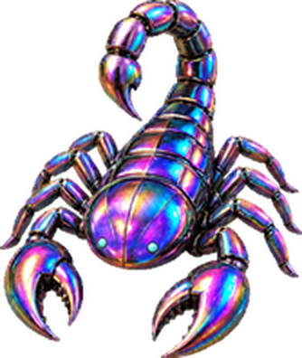

Meet Claude Pet, a little company while you code
A free, source-available desktop pet for macOS. Keep Claude usage in sight, choose your companion, and let it wander alongside your work.
Apple Silicon · DMG · Intel · Universal DMG · v0.23 release notes · Windows · ZIP (beta)

A little life on your desktop
Rendered natively on macOS — no window frame, no background, no ghosting.
A quiet companion
Wanders around your screen, occasionally follows your cursor at a distance, and can hop between monitors. Turn roaming off from the right-click menu.
Room to focus
The usage pill tucks away during roaming. Drag your companion to choose a new resting spot.
Choose your pet
Cat, dog, fox, scorpion or elephant. Switch companions from the right-click menu.
Know where you stand
One small pill shows session, weekly and per-model % with reset countdowns. Number colour tells the source (green = server, amber = estimate), label colour tells how much is left.
A little celebration
Your companion reacts when it detects a session reset. Double-click to jump and refresh usage.
Updates on your terms
Checks GitHub every hour after launch. Right-click → Check for updates… checks immediately and installs a newer release if available.
Pick a companion you love
Cat is built in. Dog, Fox, Scorpion and Elephant ship ready to use — switch anytime from the right-click menu, or drop your own folder into ~/.claude_pet/pets.

Your Claude limits, at a glance
Session, weekly, and model usage when available. Exact mode shows server percentages and reset times; local fallback is an estimate. The illustration below uses example values.
- Number colour = where it comes from: emerald for server-computed (Exact mode), amber with ≈ for the local-log estimate, coral for API cost.
- Label colour = how much is left: white, yellow from 50 %, red from 85 % — and red with ▲ while that gauge is spiking.
- The per-model gauge picks the top tier found in your logs; the second line lists reset countdowns.
Coming next: the same pill will also show Codex usage first, then Gemini, Grok and other AI services.
See it in action

The v0.24 pill on macOS in Exact mode. The session label is yellow because that gauge is past 50 %.
Make room for a small companion
macOS 12+ · Apple Silicon and Intel · Windows 10/11 beta · Free · Source on GitHub · Python is bundled.
Choose your Mac’s download
Apple Silicon: ClaudePet.dmg. Intel: ClaudePet-universal.dmg. Both are available on GitHub Releases.
Drag it to Applications
Open the .dmg, drag ClaudePet to Applications, then launch it. No separate Python installation is needed.
Connect your Claude Code account
Sign in to Claude Code first. On first launch, allow its credential in Keychain and Claude Code log access when prompted. Right-click the pet for settings.
Windows (beta)
Download claude-pet-win.zip, unzip it and run ClaudePet\ClaudePet.exe. The build is unsigned, so SmartScreen warns the first time: More info → Run anyway. Sign in to Claude Code on Windows first.
~/.claude. Update checks contact GitHub.
Exact when available, calibrated when needed
Exact mode shows Anthropic’s server-computed percentages. If it is unavailable, enter the % from Claude’s Settings → Usage to calibrate the local-log estimate.
Frequently asked questions
Is Claude Pet free?
Yes. Claude Pet is completely free to download with source available on GitHub. You can download the notarized app from GitHub Releases or build it yourself from the source code.
Which platforms does Claude Pet support?
Claude Pet runs on macOS 12 or later, on Apple Silicon and Intel Macs (Intel from v0.10 via the universal build). It is rendered natively with AppKit, so there is no window frame, no background, and no ghosting.
How does Claude Pet track my Claude token usage?
Exact mode requests Anthropic’s server-computed account percentages using your existing Claude Code credential. Local fallback estimates only the activity recorded in Claude Code logs; it cannot include web or desktop chat activity absent from those logs. Calibration applies to the estimate, not the server percentage.
Is Claude Pet affiliated with Anthropic?
No. Claude Pet is an independent project by Yeongyu Yang (uygnoey). Claude is a trademark of Anthropic PBC, and Claude Pet is not affiliated with, endorsed by, or otherwise related to Anthropic.
Does Claude Pet include web or desktop chat usage?
Exact mode requests Anthropic’s server-computed account percentages using your existing Claude Code credential. Local fallback estimates only the activity recorded in Claude Code logs; it cannot include web or desktop chat activity absent from those logs. Calibration applies to the estimate, not the server percentage.
How can I check Claude's 5-hour and weekly usage limits on a Mac?
Launch Claude Pet and allow access to the existing Claude Code credential in macOS Keychain. Its small pill shows session, weekly total, per-model usage when available, and reset countdowns.
Does Claude Pet send my prompts or source code anywhere?
No. Claude Pet does not upload prompts, transcripts, or source code. Exact mode contacts Anthropic only to request usage percentages.
The limits, no spin
- Exact mode requests Anthropic’s server-computed account percentages using your existing Claude Code credential. Local fallback estimates only the activity recorded in Claude Code logs; it cannot include web or desktop chat activity absent from those logs. Calibration applies to the estimate, not the server percentage.
- Admin API cost belongs to your Console organization and is separate from your subscription limit.
- The Admin API key is stored in plaintext in ~/.claude_pet.json — use it on a personal machine only.
Claude 사용량을 알려 주는 데스크톱 펫 (macOS · Windows 베타)
Claude Pet은 코딩할 때 곁에 있어 주는 무료 앱이에요. 고양이·강아지·여우·전갈·코끼리 중에서 고르고, 화면 산책과 커서 따라다니기를 즐겨 보세요. Claude Code 로그인 후 펫 옆의 작은 필 한 줄에 세션·주간·모델 사용률이, 둘째 줄에 리셋 시간이 보여요. 수치 색이 출처(서버 값은 에메랄드, 로그 추정은 앰버), 라벨 색이 잔여량(50%부터 노랑, 85%부터 빨강)을 알려 줘요. 다음으로 Codex 사용량을 먼저, 이어서 Gemini·Grok 등 다른 AI 토큰도 같은 필에 추가할 예정이에요.
macOS 12 이상을 지원해요. Apple Silicon은 ClaudePet.dmg, Intel Mac은 ClaudePet-universal.dmg를 받으세요. Windows 10/11은 베타 zip(claude-pet-win.zip, 서명 없음)을 풀어 ClaudePet.exe를 실행하세요. 설치 안내 · v0.24 다운로드와 변경 내역
Enjoying Claude Pet?
It's free and always will be. If it saved you from a surprise rate limit, a small sponsorship keeps the pet fed and the updates coming.
Sponsor on GitHubOne-time or monthly — every bit helps.